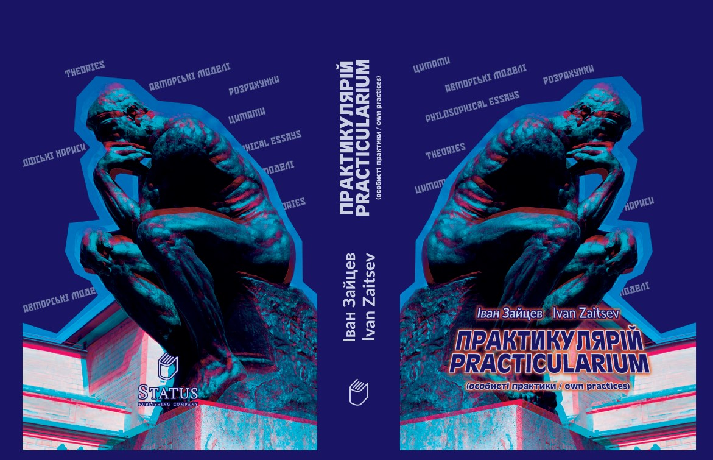

Pensa quando pianifichi.
Comprendi quando percepisci.
Realizza aiutando gli altri.
È proprio questo ordine di azioni
a generare una sinergia superiore
al valore di ogni singola fase.
(© PRACTICULARIUM. I.S. Zaitsev)
Acquista
I Modelli dell'Autore sono il risultato di osservazioni,
analisi delle pratiche reali e registrazione sistematica
delle regolarità che si ripetono nel tempo.
Non si tratta di concetti astratti
né di costruzioni puramente teoriche.
Sono risultati derivati dall'esperienza pratica,
dalle decisioni prese e dalle azioni compiute,
che possono essere applicati nella vita reale.
Questi modelli si sono formati nel corso degli anni:
attraverso il lavoro con le persone,
con i team,
con le sfide manageriali,
con le crisi e le opportunità di crescita.
Ogni modello rappresenta:
una comprensione strutturata della situazione
una logica decisionale
la valutazione delle conseguenze
la possibilità di adattamento al contesto
Non richiedono fede.
Non devono essere accettati come verità assolute.
Il loro scopo è essere verificati nella pratica.
Non devono essere accettati come verità assolute.
Il loro scopo è essere verificati nella pratica.
Questi modelli sono destinati a chi non vuole semplicemente reagire agli eventi,
ma desidera comprendere ciò che accade e orientare consapevolmente la propria direzione di sviluppo.
Per questo motivo sono diventati parte integrante di PRACTICULARIUM —
come esperienza documentata e trasformata in uno strumento pratico
applicabile nella vita reale.
Elenco delle teorie, dei modelli e degli algoritmi sviluppati dall'autore:
Acquista
Modello di valutazione delle competenze (modello graduato)
Teoria della valutazione del significato della vita (teoria del ciclo)
Algoritmo per la valutazione qualitativa dell'indicatore «Amore»
Principio sistemico «Motivazione Evolutiva»
Classifica comparativa retrospettiva (Metodo Zaitsev)
La capacità lavorativa come derivata della determinazione verso l'obiettivo
Sistema di gestione della qualità della produzione industriale
Sistema di gestione del budget per le attrezzature di consumo ad alto valore